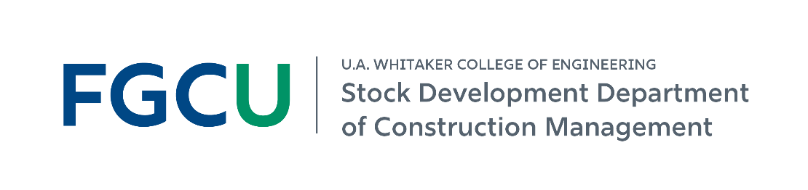

PROGRAM GROWTH
44 → 475 studentsA growing community.
Fall BSCM enrollment, 2019–2026
View enrollment data
| Year | Students |
|---|

FALL 2026 PROGRAM SNAPSHOTA growing Construction Management program with hands-on learning, strong industry connections, and career-ready graduates.
Established Summer 2019
12 full-time + 11 adjunct faculty and staff
* Average starting salary is self-reported by graduates in the AY 2025–26 senior exit survey. ** Placement includes CM-related employment or graduate school within six months of graduation.
Fall BSCM enrollment, 2019–2026
| Year | Students |
|---|
Internship employers rated student performance in AY 2025–26.
Our 2026–2031 priorities emphasize career-ready students, meaningful industry engagement, and continuous improvement informed by practice.
Explore internships, recruiting, guest lectures, site tours, student organizations, or faculty collaboration.
Construction managers coordinate people, schedules, budgets, materials, and project delivery. Build the technical, management, leadership, and problem-solving skills to take projects from start to finish.
$21,000 in department scholarships
Awarded to students in AY 2025–26.
Start learning early
CM courses are offered throughout all four years.
Visit Holmes Hall
Meet our students and faculty, and ask about internships, organizations, research, and careers.
Explore the BSCM and connect with the program.
Construction Management concentration
Read or download any of the three original handouts.